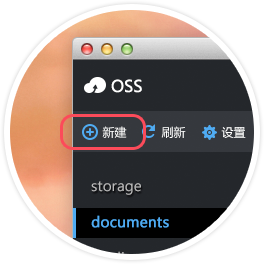

新建
设置
刷新
还未创建Bucket
属性管理
回调设置
碎片管理
Refer设置
图片设置
Bucket下载

欢迎使用OSS客户端
点击左侧栏的
新建
按钮，开始创建你的Bucket
上传速度：
/秒
-
下载速度：
{{OSSDownloadQueue.downloadSpeed|bitSize}}/秒
-
{{menu.text}}
没有上传
没有下载
打开日志文件夹
没有日志
正在加载下载列表，当前已加载了
{{loadDownloadCount.downloadcount}}
个文件，请稍候...
当前加载队列已超出客户端下载能力，请使用OSS提供的API下载。
同时删除已经加载的下载列表
终止操作
注：如果下载队列已加载完成,则删除已加载列表选项无效